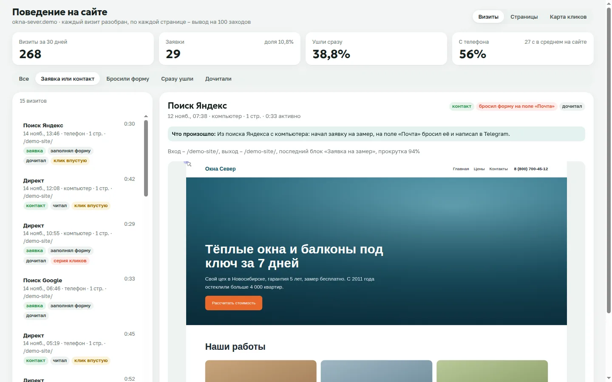
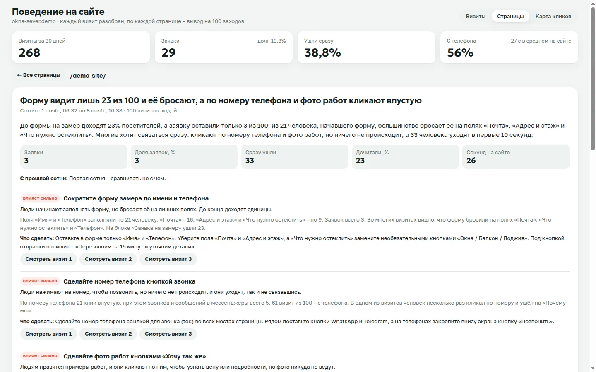
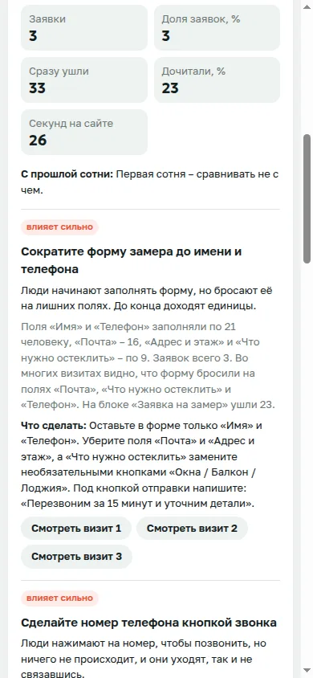

Отчёт для Артёма · 15.11.2026 · Лупа (репо tema-mail/lupa) + сайт EV Sibir · снимки – демо-сайт «Окна Север», на EV пока один проверочный визит
Лупа в ЛК EV Sibir: каждый визит разобран, по каждой странице – вывод на 100 заходов
Голосовой итог (1,3 мин)
В админке EV Sibir появилась вкладка «Поведение»: одно окно, как у Игната. Каждый визит получает ярлыки и строку ИИ, по каждой странице на каждые 100 заходов людей выходит вывод «что поправить» и «было – стало». Лупа как сервис осталась прежней. Стенды ждут одного твоего решения: на чём их собирать.
1. Что видно в окне: визит с причиной ухода, вывод по странице с правками и кнопками на записи

«Визиты»: у каждого захода ярлыки кода (заявка, бросил форму на поле «Почта», дочитал) и строка ИИ «кто, откуда, что делал, почему ушёл», справа запись.

«Страницы»: вывод по сотне. Цифры сотни считает код, ИИ пишет правки. У каждой правки есть кнопки «Смотреть визит», они открывают запись.

То же на телефоне, 390 px, без прокрутки вбок.
Пример настоящего вывода по демо-странице: «Форму видит лишь 23 из 100 и её бросают, а по номеру телефона и фото работ кликают впустую». Правки: сократить форму до имени и телефона, сделать номер кнопкой звонка, фото работ – кнопками «Хочу так же», кнопку «Вызвать замерщика» поднять выше.
Третья вкладка – карта кликов из сервиса. Разборы сайта целиком, реклама, отчёты и настройки из окна вырезаны.
2. Что стоит на EV и как проверено: живой визит дошёл, Метрика и sitemap не тронуты
Что
Как сделано
Проверка
Счётчик Лупы
Код в <head> из настроек кабинета, выключатель там же. Грузится только после «Принимаю» на cookie, вместе с Метрикой
До согласия не грузится ни Метрика, ни Лупа. После согласия визит с телефона (2 страницы, запись 45 КБ) дошёл в Лупу
Вкладка «Поведение»
Новый файл lupa_view.py, в admin.py три строки. Адрес окна с токеном – в lead.env на сервере, в git его нет
Вкладка собирается внутри контейнера, адрес задан. Лупа пускает окно только на evolutioncarservice.ru
Сайт
Статику не пересобирал
Главная, админка, sitemap отвечают 200, Telegram-туннель заявок на месте
Почему не в шаблоне сайта. Сначала поставил счётчик в общий шаблон и увидел подвох до выкладки: deploy.py сравнивает страницы по хешу всего HTML. Всем 284 страницам встал бы свежий lastmod в sitemap, и все ушли бы в IndexNow, хотя содержимое не менялось. Откатил и поставил штатным «кодом в <head>»: его вставляет сервер, статика не меняется.
Не проверено глазами: вкладку внутри самой админки. Временный вход в админку в обход пароля мне не разрешили, и это правильно. Открой evolutioncarservice.ru/admin → «Поведение». Пока там один мой проверочный визит: ярлык он получит через 30 минут после ухода, строку ИИ – когда наберётся пачка или пройдёт 2 часа.
3. Как устроено и сколько стоит: код считает, ИИ на твоей подписке объясняет
Ярлыки – кодом, бесплатно, у каждого визита через 30 минут после ухода: бот, сразу ушёл, читал или дочитал, бросил форму на поле, клик впустую, заявка, контакт, где ушёл.
Строка ИИ – пачками по 25 визитов людей дольше 10 секунд, одна строка на визит. В ответе принимаются только id из пачки.
Вывод по странице – на каждые 100 заходов людей после прошлого вывода. Цифры сотни и сравнение с прошлой сотней считает код, ИИ пишет правки. Если в тексте число, которого нет в данных, вывод помечается «проверьте».
ИИ – Opus, как ты сказал 14.11, через твою подписку. Обработчик перенесён с мака на claude-vps: на маке он падал с ошибкой связи. Замеры на демо: пачка из 25 визитов – около 6 тыс. токенов на входе и 3 тыс. на выходе, 25–30 секунд. Вывод по странице – примерно столько же. По API это стоило бы около 0,1–0,2 $ за вызов, на подписке денег не списывается, расходуется лимит. Точный расход на сайт замерим на следующей неделе вместе с OpenRouter, как ты решил.
Лупа: 13 коммитов, 67 тестов зелёные, выкладка прошла deploy-check (GO с замечаниями). EV: 5 коммитов, копии серверных файлов до выкладки лежат в deploy-backups/2026-11-15-lupa. Затрачено около полутора часов.
4. Стенды и что попутно нашёл: карта стендов нужна до вёрстки
По правилу site-lead стенд – новый сайт, поэтому сначала карта страниц и твоё «да», потом вёрстка. Предлагаю так:
1. SEO-сайт Многостраничный сайт услуг с вымышленным брендом по структуре EV: главная, хабы услуг, страницы моделей, цены, блог. ЛК как у EV: Страницы, Заявки, Метрика, Поведение.
2. Интернет-магазин Наш шаблон цветочного магазина (как Milovini) с вымышленным брендом: каталог, карточки, корзина, оформление. В ЛК – та же Лупа, вывод по каждой карточке и корзине.
Визиты на стендах – как в демо Лупы: правдоподобные заходы плюс настоящие записи прогонов, чтобы выводы по страницам появились сразу.
Что попутно нашёл (не чинил)
EV: Метрика теряет часть визитов. CSP сайта пускает только mc.yandex.ru, а Метрика для части посетителей ходит на mc.yandex.com: из браузера в Нидерландах 7 блокировок, визит в Метрику не ушёл. Лечится одной строкой в CSP. Сделать?
Лупа: в hono две уязвимости уровня moderate (были и раньше, записал в техдолг). Выкладку держал чужой незакоммиченный файл deploy/dns-lupa-deford.py (адрес lupa.deford.ru): на время выкладки я его отодвигал и возвращал на место, сам файл не трогал.
Нужно от тебя: два решения и два «да»
Стенды: база как выше (SEO по структуре EV, магазин по шаблону Milovini, бренды вымышленные) – да или другое? После «да» дам карту страниц стендов ссылкой.
Где показывать стенды: открытой ссылкой на Pages, чтобы слать клиентам, или за паролем.
Вставить в CSP EV mc.yandex.com, чтобы Метрика не теряла визиты? Да или нет.
В скиллы (site-mentor): а) admin-builder – модуль «Поведение (Лупа)» в базовый ЛК, эталон EV; б) site-lead – общие скрипты на сайтах с lastmod по хешу ставить кодом в <head>, а не в шаблон. Внести? Да или нет по каждому.
Что раскрыть: как считается сотня по странице, что именно вырезано из сервиса в окне, план стендов по шагам.